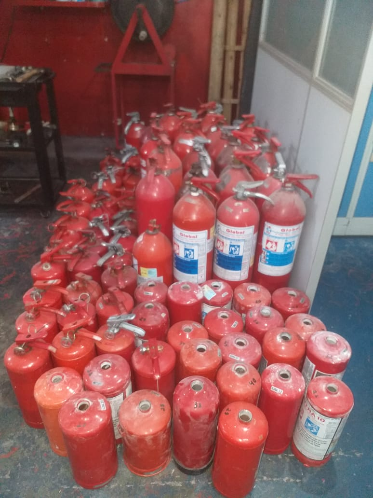
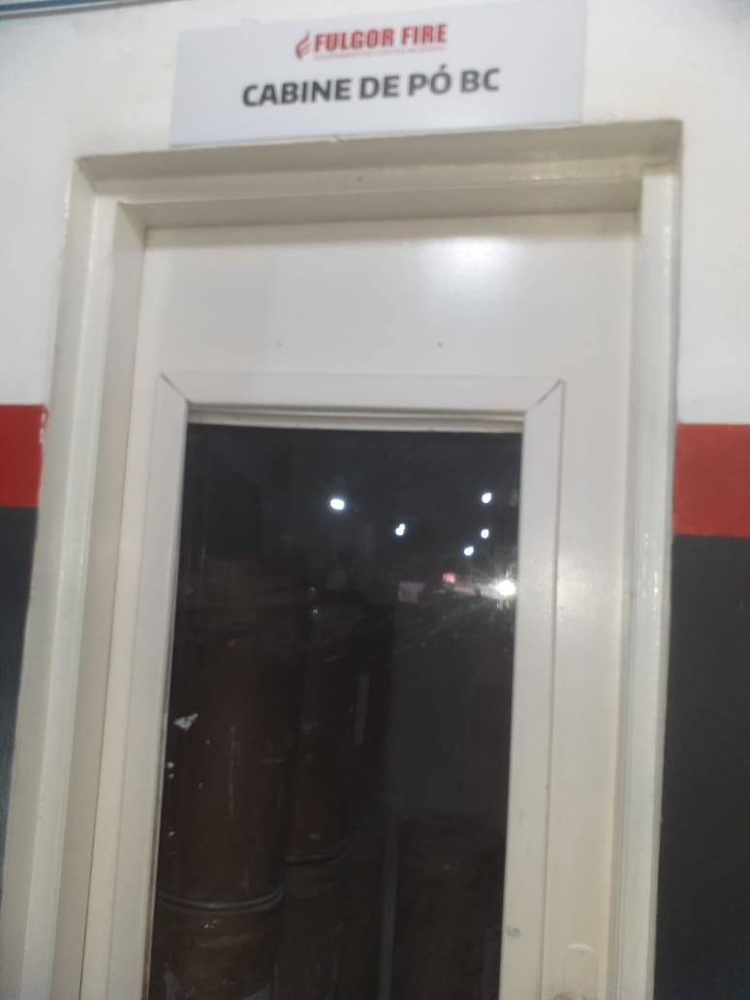
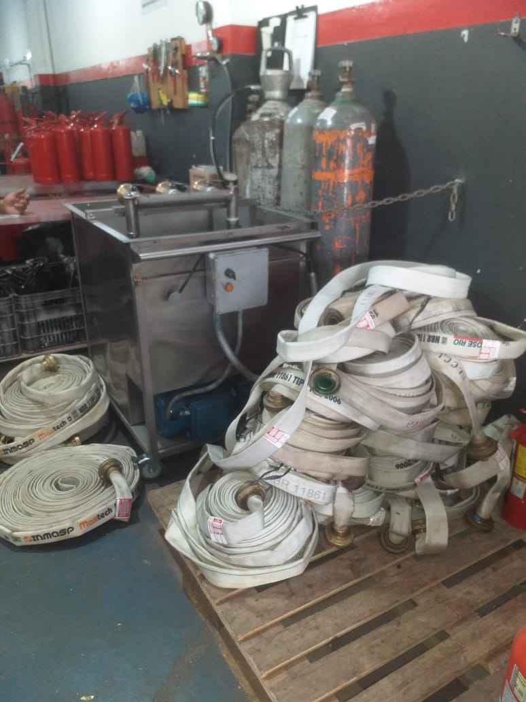
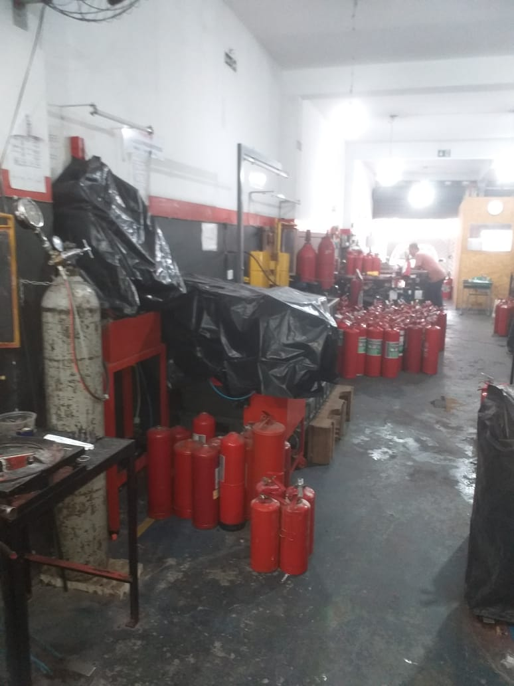
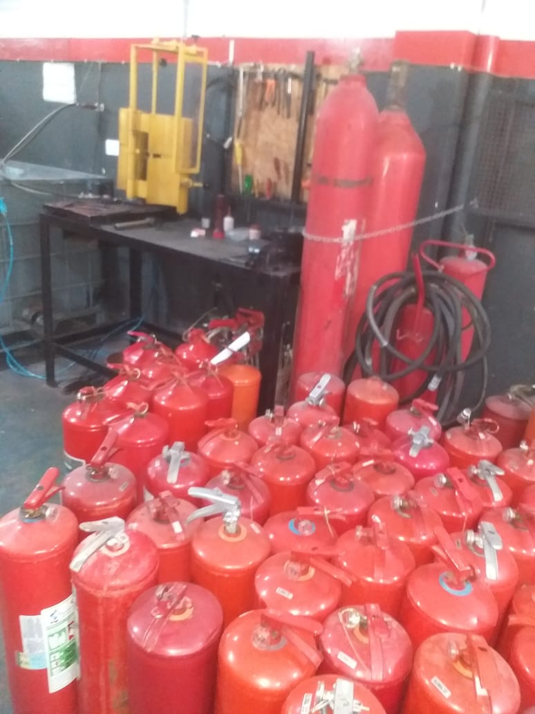

🔥📝 VW ASSESSORIA
E PREVENÇÃO
Extintores e Consultoria administrativa
SOBRE NÓS
A EMPRESA
Na VW Assessoria e Prevenção, somos especialistas em segurança contra incêndios e gestão de documentação técnica. Nossa missão é proteger vidas e patrimônios, oferecendo soluções completas e personalizadas para empresas de todos os portes. Em nossa empresa, sua segurança é a nossa prioridade. Confie em quem entende do assunto e esteja sempre em conformidade com as normas de segurança.
Fazemos os testes de extintores com segurança e qualidade






